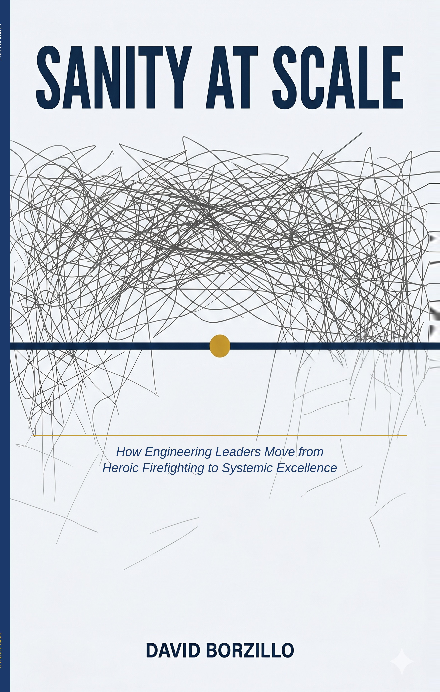

Stop scaling
the chaos.
Your team is busy. Your backlog is full. And somehow, nothing important is getting done. Sanity at Scale is the no-nonsense manual for leaders who are done pretending more process is the answer. Launching June 26 — subscribe to be notified the moment it's available.
Free 1-page PDF · No email required · Use it in your next meeting

Your organization grew.
So did the chaos.
Scaling teams shouldn't mean scaling dysfunction. But most organizations accidentally build complexity into every layer — and then wonder why nothing ships fast anymore.
Hundreds of items, none force-ranked, most over 6 months old and completely irrelevant.
Calendars are packed. Actual forward progress is not.
If you're indispensable, you're the bottleneck. Your best people already know it.
Ceremonies without clarity. Velocity without direction. Burnout with a framework name on it.
What changes when you work this way.
The difference between a team that's busy and a team that's effective isn't effort — it's system design.
Before The Current Chaos
- Backlog with 300 items, none prioritized, all "important"
- Endless meetings with no decisions and no follow-through
- Top talent burning out from friction, not from hard work
- An Agile transformation that somehow created more process
- Leaders who can't say no and become the bottleneck
After Sanity at Scale
- A top-5 priority list everyone understands and executes against
- Meetings that produce real decisions and leave people energized
- High-engagement teams where your best people choose to stay
- Lightweight habits that create sustainable, repeatable velocity
- Leaders who delegate, automate, and protect what matters most
"This is not a fluffy, touchy-feely book — we have plenty of those, and they are useless. It is a manual for industrial execution. It cuts through the noise of Agile buzzwords and snowflake nonsense. Start with Chapter 4 and Chapter 6. Make those critical changes today."
"This is an excellent start. You quickly identify the problem and give some excellent examples of what happens in the long run. I have seen all of these play out far too many times."
"I literally did a mental sigh of relief when I read this paragraph. Thank you for being so real and transparent — it is refreshing."
"Smiling as I read this — I am away from the office for 2 weeks and noticed where my own role was a bottleneck. Took the opportunity to knowledge share and document who our secondary admin is."
"This whole chapter resonates. I have definitely been guilty of some of it — though also proud to say more recently evolved into fixing the root cause without the extra checks."
"Definitely resonates. Also really hard to pull back from..."
"The 'send your hero on vacation to build your list of issues to address' exercise is a great idea. I have seen all of these patterns play out far too many times."
A manual, not a manifesto.
Every chapter delivers a specific, actionable fix for a real organizational problem. No fluff. No theory for its own sake.
The Hero Trap
Why your best people are hiding your broken processes — and how heroism creates single points of failure, burnout, and systemic rot.
The Process Paradox
How we built a bureaucracy to manage the heroes. Process as scar tissue — and the algorithm for simplification.
The Dependency Web
The three types of death-by-dependency: legacy anchors, guru bottlenecks, and permission gates.
Radical Simplification
Declare bankruptcy on your backlog. Apply the Value Litmus Test. Build a survival list that actually survives.
The Value Litmus Test
If you can't measure the outcome, don't start the effort. Four questions that cut through the output trap.
The Myth of "High, Medium, Low"
Buckets fail. Ordered lists save sanity. Weighted scoring, WSJF, and the "Above the Line" rule.
Visualizing the Invisible
The stealth saboteur is dark work. Three laws of visualization that replace interrogation with observation.
The Art of the Hard No
The shield vs. the filter. The political capital ledger. Practical scripts for protecting focus in a world of yes.
The Sanity Habit & High-Stakes Sync
From heroic leader to Strategic Pilot. The Daily Flight Check and the self-correcting team.
The Anti-Hero Leader
The identity shift that changes everything. The Beekeeper vs. The Shepherd — and why letting the ball drop builds a stronger team.
Team Mechanics for Industrial Execution
The Black Box Protocol, the Five Whys, and the Event Chain — for teams that learn from failure instead of hiding it.
The Sustainable Pace
A career you can survive. A life you can enjoy. What it looks like when the system finally works without you holding it together.
He used to be the hero. That's how he knows it doesn't work.
Over a decade ago, Dave Borzillo was waking up at 4am to answer calls no one else would answer. He told himself it was dedication. What it actually was: a system that had made one person indispensable — and that person was him.
That moment is where Sanity at Scale began. Not in a boardroom or a consulting engagement, but in the exhausting realization that being the hero wasn't leadership. It was a trap. And the only way out was to stop solving everything for everyone and start building a system that didn't need a hero at all.
As a Registered Scrum Trainer and author of United Agility and Who Killed Agile?, Dave has spent two decades helping leaders make the same shift — from indispensable to irreplaceable, from firefighter to Strategic Pilot.
"I was the constraint in my own organization. This book is what I wish someone had handed me then."
The chaos is costing you more than you think.
Every week without clarity is a week of your best people's energy wasted. Subscribe on Substack and you'll be the first to know when it drops on June 26.
Free 1-page PDF · No email required · Launches June 26